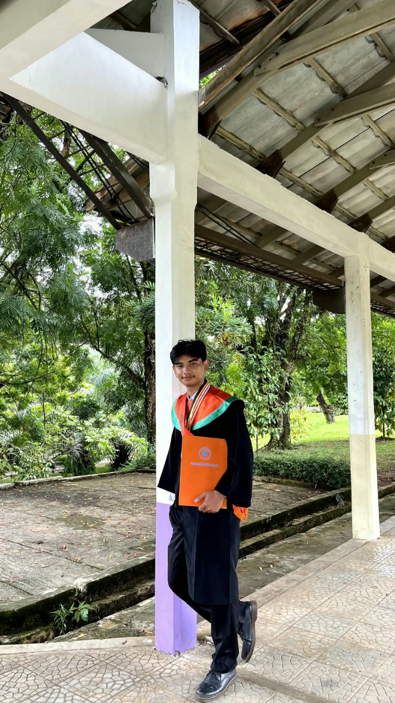

SISTEM TENAGAINSTALASI LISTRIKMAINTENANCEOTOMASI INDUSTRI
PROFIL
Profil Singkat

Halo, saya
Muhamad Defri.
Saya tertarik mengembangkan kemampuan di bidang kelistrikan, otomasi, dan maintenance industri.
Mahasiswa Program Studi Teknologi Rekayasa Instalasi Listrik, Jurusan Teknik Elektro, Politeknik Negeri Padang dengan IPK 3,53. Memiliki pengalaman praktik kerja lapangan di PLN Gardu Induk Payakumbuh serta magang di bagian Maintenance PT Federal Izumi Manufacturing. Menguasai keterampilan dasar instalasi listrik dan pengkabelan, pemrograman PLC Omron, serta pengembangan proyek berbasis mikrokontroler dan Internet of Things (IoT). Berminat mengembangkan kemampuan teknis dan pengalaman profesional di bidang kelistrikan, otomasi, dan pemeliharaan peralatan industri.
Melakukan pemeriksaan dan pemeliharaan peralatan produksi serta mengenal sistem kelistrikan dan kontrol mesin industri.
Terlibat dalam overhaul 11 unit mesin dari 5 jenis mesin, mencakup pembongkaran, pemeriksaan, pembersihan, dan pemasangan kembali komponen elektrik maupun mekanik.
Bertanggung jawab dalam pembongkaran, pemeriksaan komponen elektrik/mekanik, hingga perakitan kembali.
Mengoperasikan mesin milling untuk membuat suku cadang pendukung perawatan komponen.